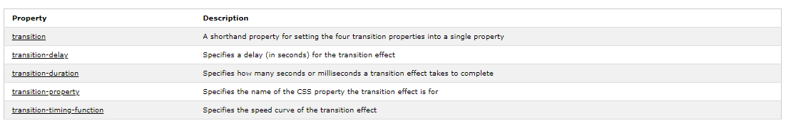

To create a transition effect, you must specify two things:
A. the CSS property you want to add an effect to
B. the duration of the effect
Note: If the duration part is not specified, the transition will have no effect, because the default value is 0.
Which way is up? Hover over the div element below:
Hover over the div elements below, to see the different speed curves:
linear
ease
ease-in
ease-out
ease-in-out